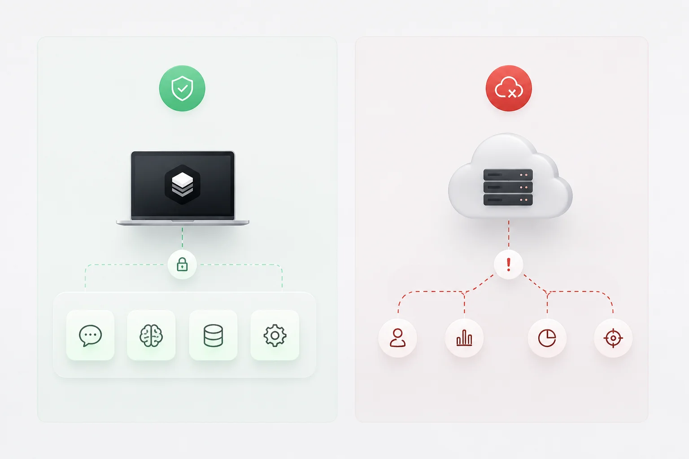
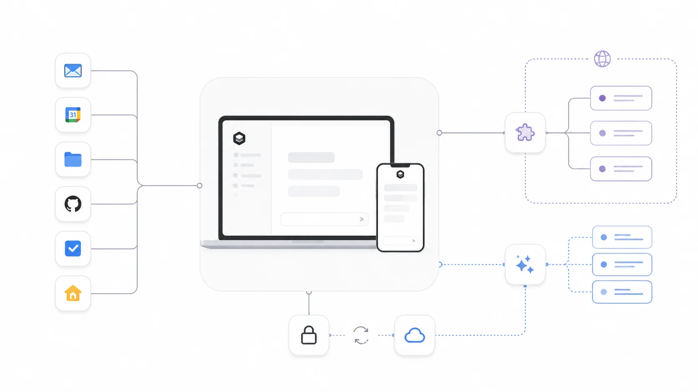

Privacy
Draft — not legal advice. Every [Organization-specific information required] marker needs a fact only your organisation can supply. No certification is claimed. Have counsel review before publishing.
What Arble collects, why it collects it, where it is kept, and what you can do about it.
Arble runs the agent loop on your device. That is an architectural decision before it is a privacy one, and it determines most of this page: the data that never leaves the device cannot be collected, disclosed or breached at our end, because we do not have it.
This page describes how Arble handles personal data. It is written to be read. Where a legal term carries a specific meaning, it is defined at first use.
Privacy philosophy
Three rules decide the rest.
- Local by default. Sessions, memory, credentials and tool results are stored on your device. Cloud synchronisation is opt-in, per domain.
- Collect for a reason. Data is collected to make a feature work, not because it might be useful later.
- No surprise recipients. When data leaves the device, the interface says where it is going before it goes.

What we collect
Categories below are grouped by where the data lives, because that is what determines who can reach it.
On your device only
| Data | Contains | Leaves the device |
|---|---|---|
| Sessions | Messages, tool calls and results | Only if cloud sync is enabled |
| Memory | Notes, facts and conversation history you keep | Only if cloud sync is enabled |
| Credentials | API keys and OAuth tokens for services you connect | Never to us. Sent only to the service they authenticate |
| Automation logs | Heartbeat wake-ups and what each run did | No |
| Skills | Installed skill definitions | No |
Data you provide
- Account data. Email address and authentication identifiers, if you create an account. Self-hosted deployments may have no account at all.
- Billing data. Handled by our payment processor. We receive confirmation and the last four digits of a card, never the full number. See subprocessors.
- Support correspondence. What you send us when you ask for help, including any logs you choose to attach.
Data collected automatically
| Type | Purpose | Default |
|---|---|---|
| Device information | Platform, OS version, app version — to serve the right update and reproduce bugs | On |
| Crash reports | Stack trace and app state at the moment of a crash | Opt-in |
| Usage analytics | Which features are used, as counts. Never message content | Opt-in |
| Telemetry | Latency and error rates for our own services | On for hosted; off for self-hosted |
| Desktop agent data | Pairing identifier, platform and version of a paired machine | On while paired |
Crash reports and usage analytics are off until you turn them on. Neither ever contains message content, memory contents, file contents or credentials.
Data from services you connect
Connecting a service authorises Arble to read and write on your behalf, within the scopes you grant. That data flows between your device and the service. Where cloud sync is enabled, results the agent stores in memory sync with the rest of your memory.
- Connected services. Mail, calendars, files, code hosts, task trackers and home devices you link. See Permissions.
- MCP servers. Third-party tool servers you add. Metadata — server name, URL and its tool list — is stored so the registry can be rebuilt. Call arguments are sent to that server. See MCP Servers.
- AI providers. The provider you configure receives the conversation needed to answer, including tool definitions and results. You choose the provider, and you supply the key.
An MCP server is operated by whoever published it, not by Arble. When a tool on that server runs, your message text, attached context and generated arguments go to their URL under their privacy policy. Arble shows this before the first call and cannot control what happens afterwards.

How information is used
| Purpose | Data used | Legal basis (GDPR) |
|---|---|---|
| Provide the service | Account, session and sync data | Performance of a contract |
| Keep it secure | Device information, telemetry, audit logs | Legitimate interests |
| Fix defects | Crash reports, diagnostics you send | Legitimate interests, or consent where opted in |
| Improve features | Usage analytics, where enabled | Consent |
| Bill you | Account and payment confirmation | Performance of a contract |
| Meet legal obligations | Records we are required to keep | Legal obligation |
We do not sell personal data, and we do not train models on your content. Content you send to a third-party AI provider is governed by that provider's terms; check whether they train on inputs, because that is their decision and not ours.
Retention
| Data | Kept for |
|---|---|
| On-device data | Until you delete it. Uninstalling removes it with the app |
| Synced data | Until deleted, then purged from backups within [Organization-specific information required] |
| Account records | Duration of the account, then [Organization-specific information required] |
| Crash reports | [Organization-specific information required] |
| Audit and security logs | [Organization-specific information required] |
| Billing records | As required by tax and accounting law in [Organization-specific information required] |
Security
Credentials are held in the platform keystore — Keychain on Apple platforms, Keystore on Android, the OS credential store on desktop. Memory is encrypted at rest with project-scoped keys. Traffic uses TLS. Paired devices exchange a key at pairing, so a relay carries ciphertext it cannot read.
The full technical description is in Security.
International transfers
Where data is processed depends on how you run Arble. Self-hosted deployments transfer nothing to us. For hosted services, processing locations and the transfer mechanism used are listed under [Organization-specific information required].
Your rights
Depending on where you live, you have some or all of the following. We apply them to everyone rather than tracking who is entitled to what.
| Right | What it means | How |
|---|---|---|
| Access | A copy of what we hold | Export from the app, or ask us |
| Portability | That copy in a portable format | Session and memory export produce JSON |
| Rectification | Correct what is wrong | Edit in the app, or ask us |
| Erasure | Delete it | Delete in the app; account deletion removes the rest |
| Restriction | Pause processing while a dispute is resolved | Ask us |
| Objection | Object to processing based on legitimate interests | Ask us |
| Withdraw consent | Turn off anything you opted into | Settings, at any time |
California residents. The CCPA rights to know, delete, correct and opt out of sale apply. We do not sell or share personal information as those terms are defined, so there is nothing to opt out of. Exercising a right will not degrade your service.
Deleting your data
- On device. Delete a session or memory entry in the app, or uninstall to remove everything local.
- Synced. Deleting on one device propagates to the others on next sync.
- Account. Account deletion removes account records and synced data. Backups age out on the schedule above.
Children
Arble is not directed to children under [Organization-specific information required], and we do not knowingly collect their personal data. If you believe a child has provided data, contact us and we will delete it.
Business customers
Where you use Arble to process personal data of your own users, you are the controller and we are the processor. A data processing addendum is available at [Organization-specific information required]. Subprocessors are listed in the Trust Center.
Cookies
The website and hosted console use a small number of cookies. The application itself does not. See the Cookie Policy.
Changes
Material changes are announced before they take effect, with the date on this page updated and the previous version kept available. Continuing to use Arble after a change takes effect means you accept it.
Contact
Privacy enquiries and rights requests: [Organization-specific information required]. Data controller and, where required, the representative or Data Protection Officer: [Organization-specific information required].
FAQ
Do my conversations leave my device?
Only to the AI provider you configure, which needs the conversation to answer, and only to us if you enable cloud sync. Neither happens silently.
Do you train models on my data?
No. Whether your AI provider does is their policy, not ours — check their terms before sending them anything sensitive.
What does a self-hosted deployment send you?
Nothing, other than update checks, which can be disabled. See Self-hosting.
Can you read my API keys?
No. Keys are stored in the platform keystore on your device and sent only to the service they authenticate.
What happens to my data when I stop paying?
Local data stays on your device and keeps working. Synced data is retained for [Organization-specific information required] so you can export it, then deleted.
Is memory encrypted?
At rest, with project-scoped keys. A compromised key exposes one project rather than the whole store.
Who sees data sent to an MCP server?
Whoever operates that server. Arble names the server and what will be sent before the first call, and you can remove it at any time.
How do I export everything?
Session export produces one file per session; memory exports as JSON. Both are documented in Memory.
Do you respond to law enforcement requests?
We respond to valid legal process for data we actually hold, which for most users is account records rather than content. Our policy on notifying you is at [Organization-specific information required].
How is this page kept honest?
Every claim here describes a mechanism you can verify in the product or the documentation. Where we do not yet have an answer, the page says so rather than filling the gap.
Related
Feedback
Something unclear, or wrong? Documentation defects are treated as defects. Tell us at [Organization-specific information required], or open an issue against the documentation. Include the page and the sentence — a page nobody can follow is a page that has failed, whatever it says legally.